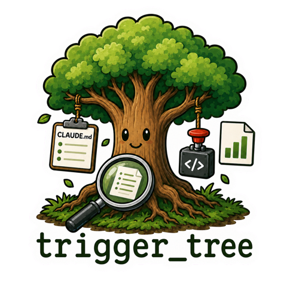

See which docs your AI actually discovers —
and which project knowledge it never finds.
100% local · zero model tokens · no cloud, no analytics vendors
A focused top 10 live; complete coverage and untouched paths in insights — including explicit rg/grep/find hunting.
/tt suggestions proposes fixes with evidence. /tt note marks the change; the trend shows whether it worked.
Paths and prompt hashes stay local; prompt text is opt-in. Stdlib only, zero network calls. Delete .trigger-tree/ and it's gone.
Coverage, router gaps and hunting distilled into one documentation health score — trackable sprint over sprint.
Hooks run shell-side in milliseconds. Measuring costs nothing — not in tokens, not in latency, not in context.
Full CI runs on all three and Python 3.10–3.13, with 100% measured coverage and a clean plugin-install proof. The dashboard opens in an iTerm2 split, tmux pane, or Windows Terminal.
In AI-assisted development, documentation is the steering wheel: it tells the assistant how your team builds software. But a rule that is never read protects nothing — an unread guardrail fails silently, and you only notice when the AI "ignores" a convention it simply never found. trigger-tree measures what actually gets read, flags what never does, and proves whether your fixes worked. Documentation becomes monitored infrastructure instead of a hopeful artifact.
And this metric exists nowhere else: agent observability platforms measure tokens and traces — none measure which of your docs the assistant actually read. Anthropic's own guidance says to keep CLAUDE.md lean; trigger-tree provides evidence for what to review, what to protect or reroute, and what to rescue.
/plugin marketplace add Hedde/trigger_tree /plugin install trigger-tree@trigger-tree /tt setup /tt doctor
| Command | Does |
|---|---|
/tt status | Snapshot: reads, hot files, untouched paths |
/tt watch | This dashboard, live, in your terminal |
/tt insights | Heat/cold map analysis + HTML report |
/tt suggestions | Max 5 evidence-backed router fixes |
/tt note | Annotate router changes on the timeline |
/tt doctor | Prove this repo is wired and receiving events |
/tt setup | Wire it into any project in one command |